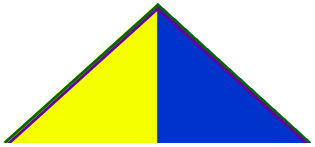
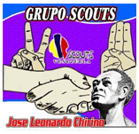

Dirección: Plaza de Las Calderas
Municipio: Colina
Estado: Falcón
Día y hora de
reuniones: Sábados de 3:00 a 5:00 pm
Jefe de Grupo: Dangelo Pimentel
Teléfonos: 0414-6388086
Dirección de Correos: dangelopimentel@gmail.com
Institución Patrocinadora: (Por definir) 
Fundado
Significado de los colores del Grupo: Amarillo por los Médanos de Coro. Azul por el Mar q nos rodea. Verde: por La Sierra Falconiana. Morado por la Bandera que llevó José Leonardo Chirino, que significa "Igualdad y Fraternidad".